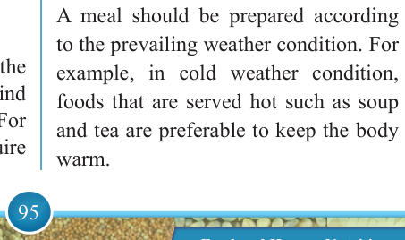

95


Food and Human Nutrition

Form Two
Age of an individual
Meals should be planned according to the age of each individual. Nutritional requirements vary at different life stages such as childhood, adolescence, adulthood and old age. For example, children need more protein than adults to support their rapid growth.
Sex of an individual
The
sex
of
an
individual
can
influence meals planning. Women of
Reproductive Age (WRA) require more
iron-rich foods than men to replace the
blood lost during menstruation.
Usually, adolescent and adult males require more energy than less active females.
State of the body or physiological status
This
includes
different
conditions
the body experiences such as illness, pregnancy
and
lactation.
These
conditions affect food intake and nutrient metabolism. For example, the sick requires more vitamins and proteins to aid the recovery process and strengthen their immune systems.
Whereas people with type 2 diabetes need to limit high sugary foods in their diets, pregnant women need more folate and iron in their meals to prevent birth defects and anaemia.
Occupation of an individual
The meal prepared should meet the body’s needs according to the kind of work the individual performs. For example, sedentary workers require
less energy-giving foods than manual labourers.
Budget allocated for food
The budget allocated for family meals determines the type, quality and quantity of food to be purchased. When foods such as beef, chicken and fish are found to be too expensive for the budget, alternative foods such as sardines or offals (organ meat), which contain similar nutrients, can be considered.
Time and equipment available
The choice of family food to be
prepared will also be determined by the time available for shopping, preparing, cooking and serving food. For example, one can plan to prepare fresh beans
instead of dried beans because the latter needs to be cooked for a long time. An individual with a gas or an electrical cooker can prepare many dishes in a short time. In contrast, the one using a charcoal stove may not do so, unless multiple charcoal stoves are used at once. Also, it is important to consider the kitchenware available for preparing, cooking and serving foods as well as storage facilities.
Climatic condition
A meal should be prepared according
to the prevailing weather condition. For example, in cold weather condition, foods that are served hot such as soup and tea are preferable to keep the body warm.

17/09/2025 16:30